液体印象网站设计
自我介绍 - 黄冠
前Microsoft MSNBC Team前端工程师
上海魏玛软件创始人
HTML5小组讲师
CNodejs社区上海负责人
HTML5小组
非营利性线下社区
推广宣传使用HTML5技术
拥有大量的一流游戏开发人员，Web应用开发人员，设计师
作品展示
美工作品
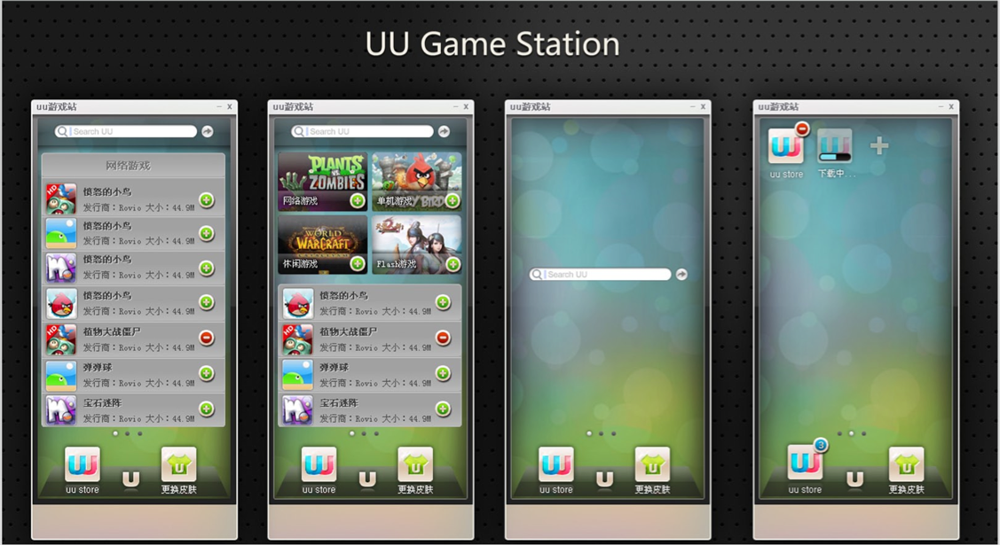
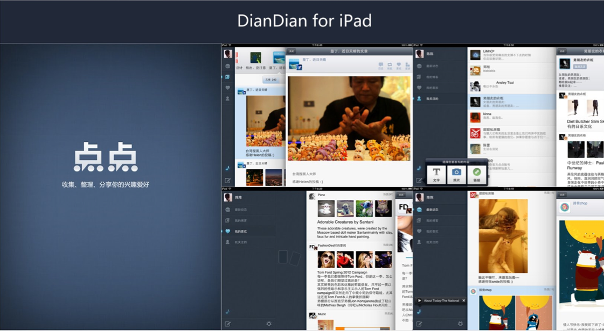
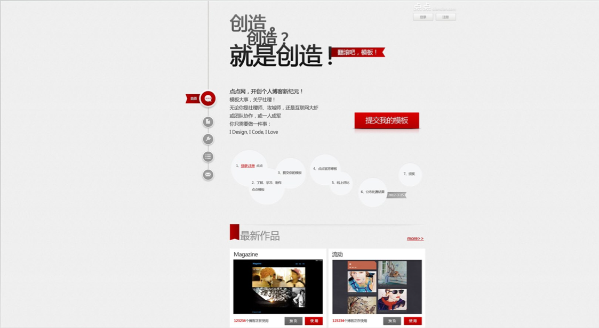
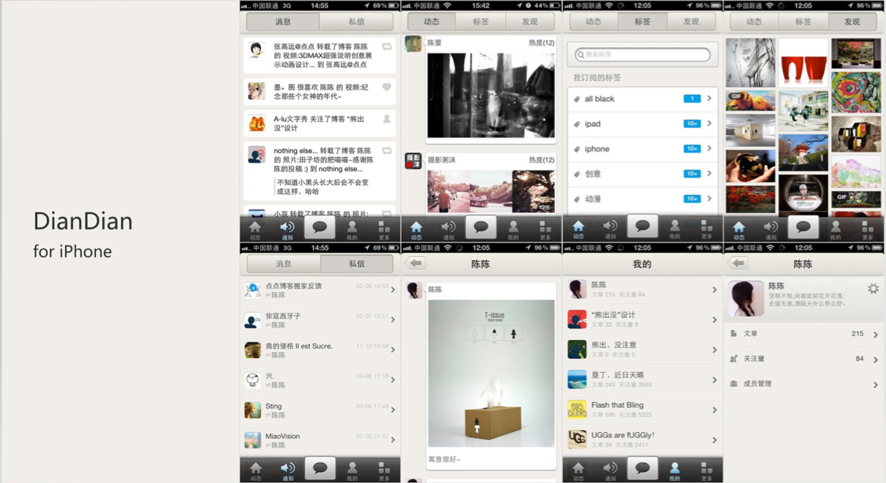
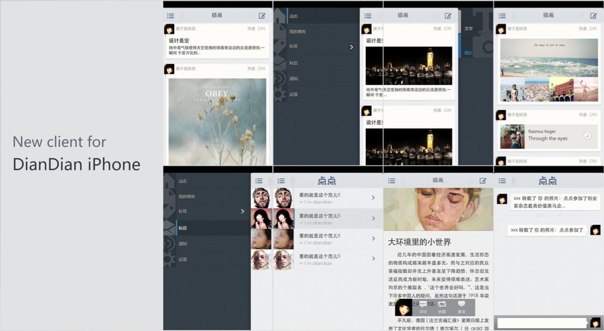
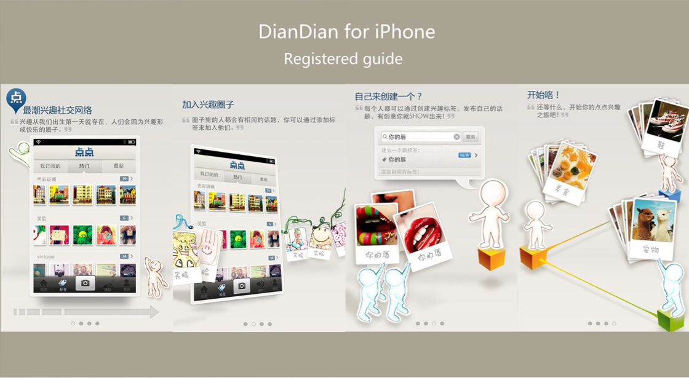
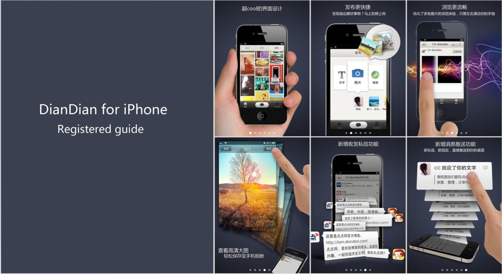
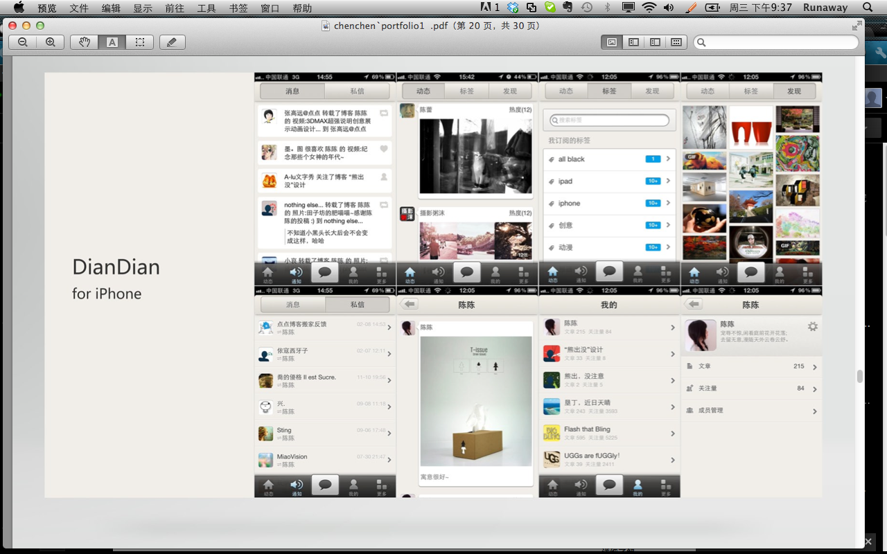
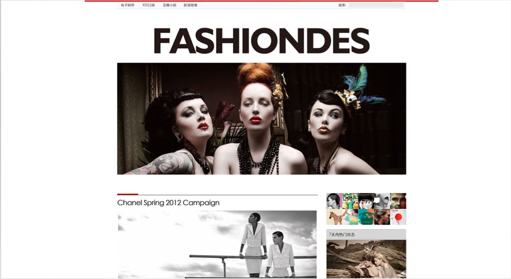
程序作品
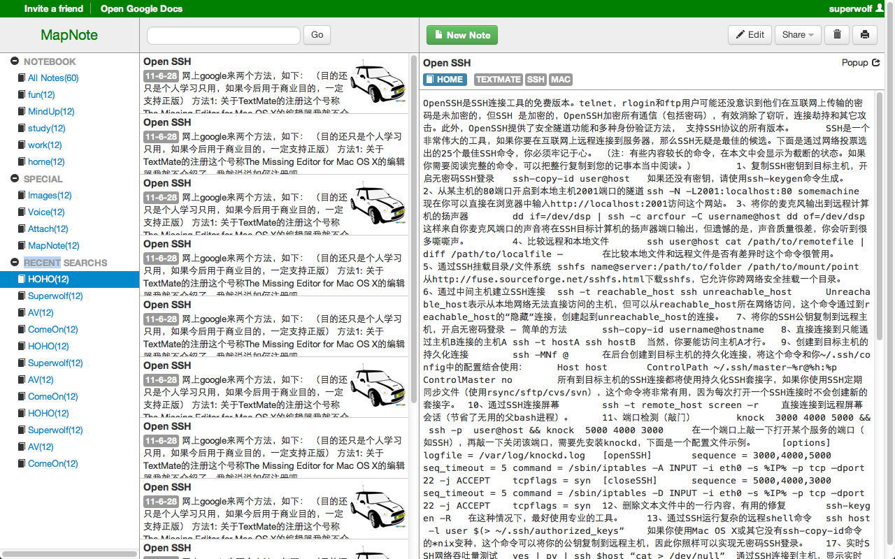
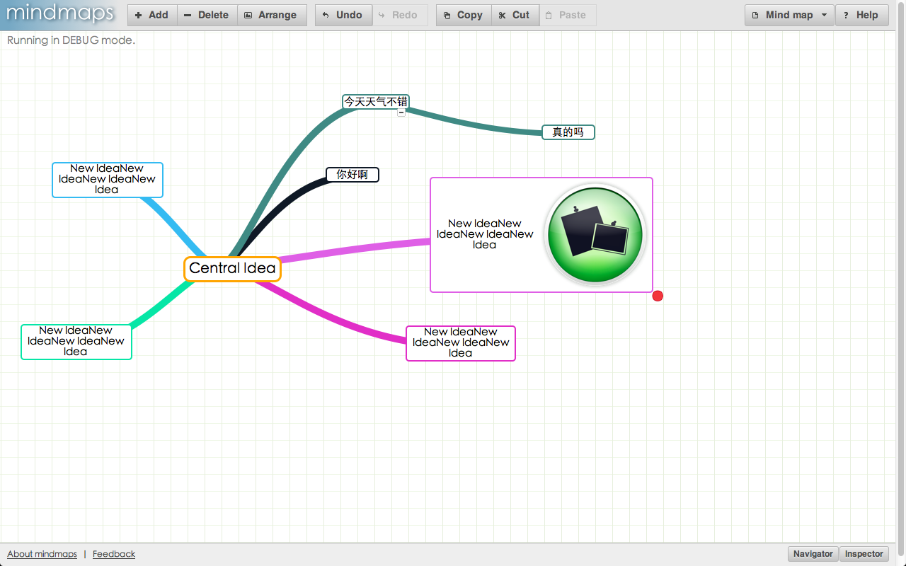
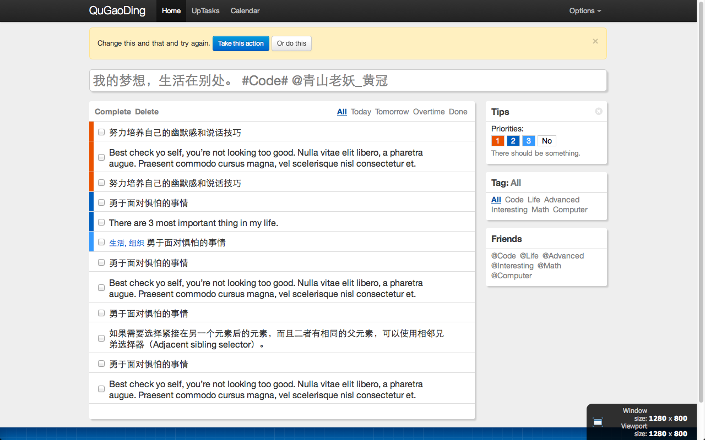
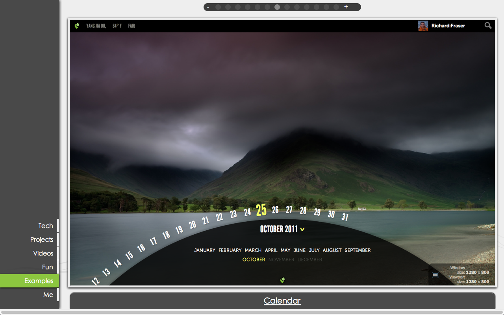
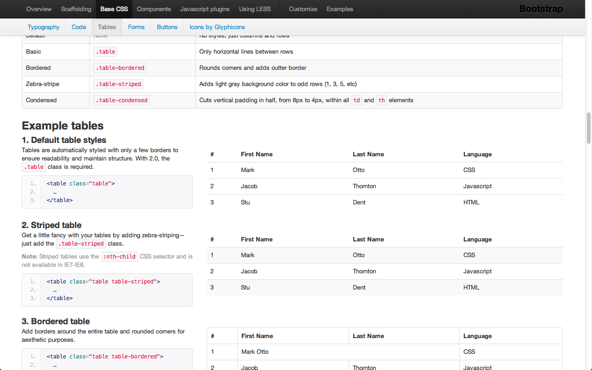
网站定位
企业形象展示
吸引客户
招募人才
网站设计
UI设计
我们设计两个主题稿供参考选择
通过Canvas或者CSS3来制作主页面的动画效果
Single Page Application
Make a web application but not website
无刷新
书签式进入，URL可记录网站状态，有利于分发以及浏览器重定向
通过横向滑动或者竖向滑动增加用户的空间感觉
响应式页面设计
网站可以自动适应当前屏幕的大小
离线依然可用
当网站被第一次加载后，即便用户没有链接互联网，用户依然可以看到之前浏览的数据
多设备支持
大尺寸移动设备
小尺寸移动设备
需要重新设计用户体验和功能布局
所用技术列表
Application Manifest Cache
Web Storage
History
Graceful Degradation Video (you can play video on iPad or iPhone)
Canvas
CSS3 Features
Animation
Transition
Translate
Skew
Coffee Script
Less
Seajs
PHP or Python
MySql
开发周期 - 2个月
←
→
/
Go to slide:
#